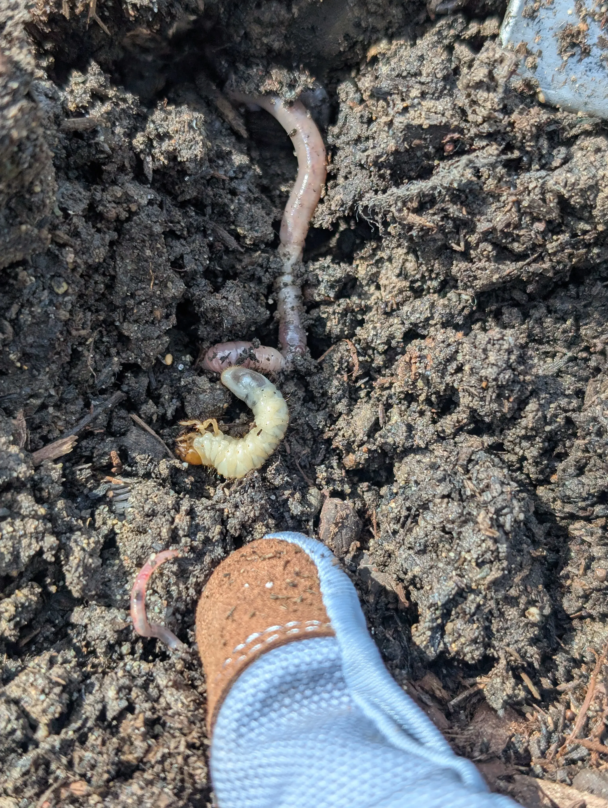

| Item | When | Est. Cost | Where |
|---|---|---|---|
| GrubGONE! (Btg), 2–3 applications | Apr, May, Aug–Oct | ~$40–$60 | West Seattle Nursery |
| Neem oil concentrate | May–July | ~$15–$25 | WSN / hardware store |
| Beneficial nematodes (2 applications) | June, July | ~$40–$70 | West Seattle Nursery |
| Mulch, round 1 (4–5 bags) | Late May | ~$25–$40 | WSN / Swanson / Home Depot |
| Mulch, round 2 — winter top-up (3–4 bags) | Oct | ~$20–$32 | WSN / Swanson / Home Depot |
| Compost/soil amendment (if drainage fails) | Late May | ~$30–$50 | Either nursery |
| Japanese Stewartia 6ft B&B | Late May | $124.99 | Swanson Nursery |
| Stewartia planting service (optional, DIY saves this) | Late May | $125.00 | Swanson Nursery |
| Carex testacea 1-gal × 5 | Late July | ~$99.95 | Swanson Nursery |
| Ground cover planting service (optional) | Late July | $100/plant or DIY | Swanson Nursery |
| Estimated total (DIY planting) | ~$395–$510 | ||
| Estimated total (full Swanson planting service) | ~$620–$780 | ||